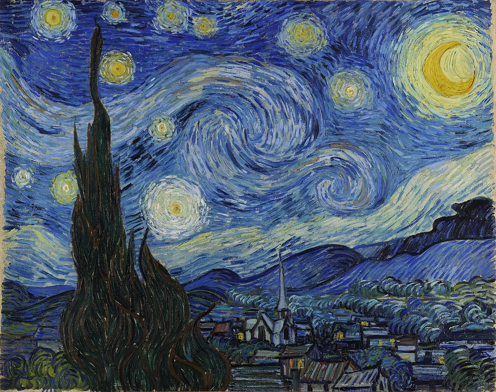

Vincent Van Gogh
Vincent van Gogh (born March 30, 1853, Zundert, Netherlands—died July 29, 1890, Auvers-sur-Oise, near Paris, France) Dutch painter, generally considered the greatest after Rembrandt van Rijn, and one of the greatest of the Post-Impressionists. The striking colour, emphatic brushwork, and contoured forms of his work powerfully influenced the current of Expressionism in modern art. Van Gogh’s art became astoundingly popular after his death, especially in the late 20th century, when his work sold for record-breaking sums at auctions around the world and was featured in blockbuster touring exhibitions. In part because of his extensive published letters, van Gogh has also been mythologized in the popular imagination as the quintessential tortured artist.
Van Gogh's painting Starry Night (1889), is one of his most iconic. Leading up to this point, Van Gogh had been suffering from mental health issues, so much so that it led to him cutting off his left ear.
